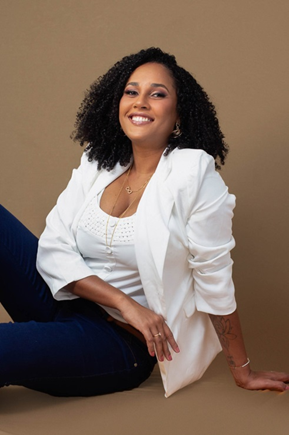

Quer saber um pouco mais sobre quem vai te atender?
Então deixa eu me apresentar!
Me chamo Caroline Chagas Ferraz, sou casada, mãe de dois pets (dois lobinhos bagunceiros), louca por doce e que ama ficar em casa assistindo filme.
Sou Farmacêutica, e passei os últimos 12 anos na área hospitalar mas especificamente, na área da Oncologia.
Mas como a Tricologia entrou na minha vida?
Pra falar a verdade, cuidar de cabelos sempre foi um prazer, por isso vivia buscando informação sobre os cuidados capilares, receitas caseiras e inclusive fiz curso de cabeleireira com o objetivo de cuidar melhor dos meus cabelos.
Apesar de gostar muito do assunto, considerava um hobbie que me ajudava a manter a autoestima em dia.
Mas em 2019 tudo mudou, iniciei a transição capilar pela 2x e tive muita dificuldade com esse mundo novo dos cabelos naturais. Pra me ajudar comecei a seguir dicas controvérsias e sem fundamentos nenhum de blogueiras cacheadas na internet. Um dia, resolvi buscar informações mais confiáveis e assim que descobrir por acaso a TRICOLOGIA e me APAIXONEI pelos resultados e impacto que causa na vida das pessoas.
Desde então, me aprofundo em estudos diariamente, a fim de poder dar o meu melhor para cada pessoa que atendo.
Acredito que o cabelo é o atributo de beleza mais importante para a grande maioria das pessoas, e que ele reflete diretamente na autoestima.
Agora que você já me conhece, conte comigo pra te ajudar a RECUPERAR seus cabelos e sua autoestima.